DESIGN SYSTEM / MASCOT / MOBILE FIRST DESIGN
Tea-REX
A trading terminal with a personality.
Tea-REX is Teahouse Finance's margin trading terminal on Sei. I was the sole designer — sub-brand, design system, and every screen on desktop and mobile. A T-Rex design language runs through the whole product, so it's the trading app you remember.
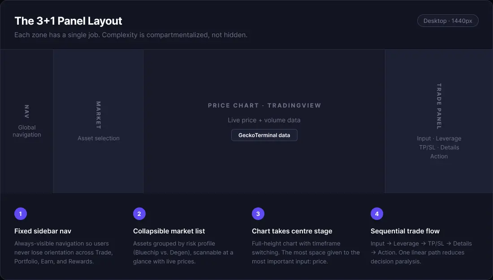
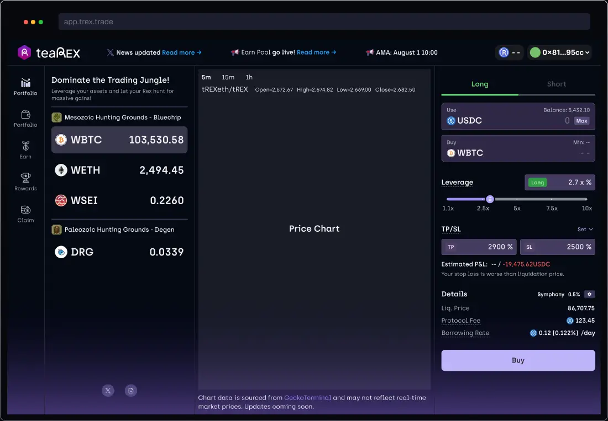
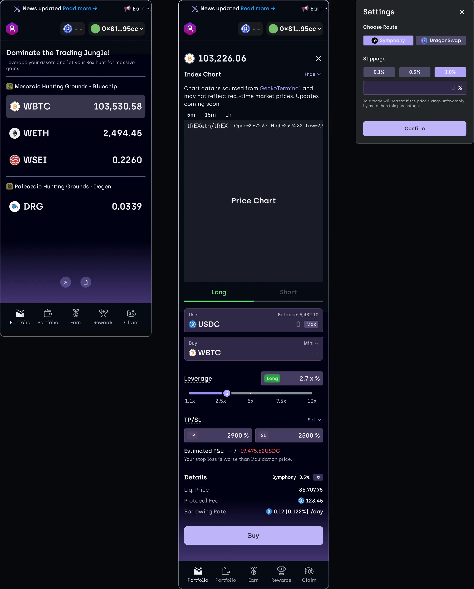
MASCOT
One animal, carried all the way down.
RAAAAAAAAWR
A mascot that only lives on the marketing site is just a sticker. Rex had to show up where brands usually get cut for being unserious — the leverage slider, error states, the wallet button, the tokenomics page.
Personality in the language. Never in the numbers.
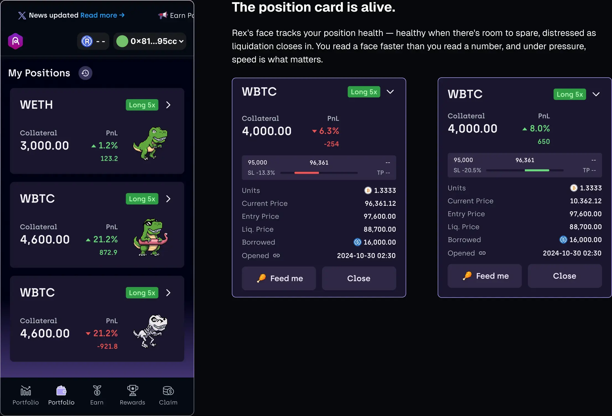
Rex is the gauge.
Three moods — thriving, uneasy, in trouble. You know how your position is doing before you read a number.
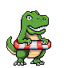
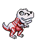
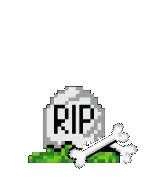
Actions speak jungle.
“Feed me” adds collateral. “Close” exits. The verbs come from the jungle, not the exchange. Every icon is pixel art — bones, potions, meat, gems — so you'd recognize the terminal from a thumbnail.
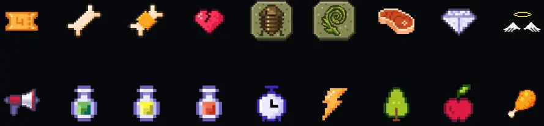
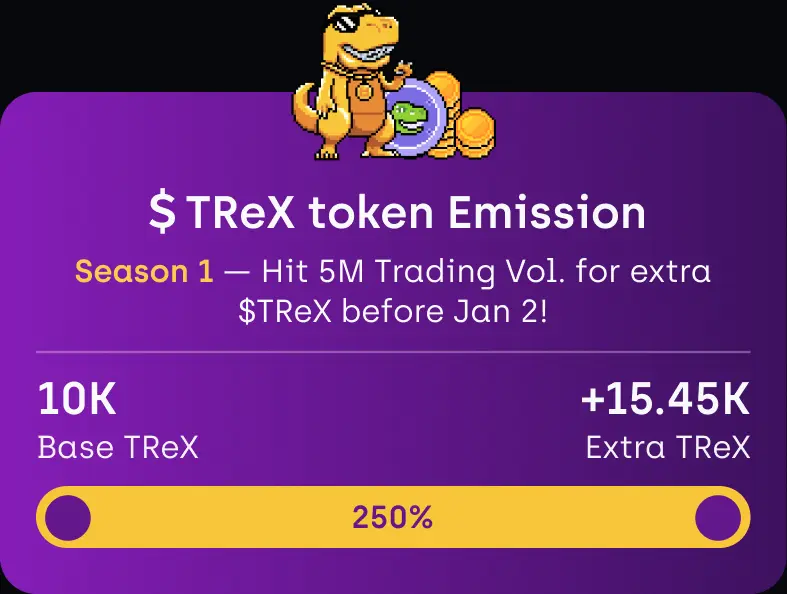
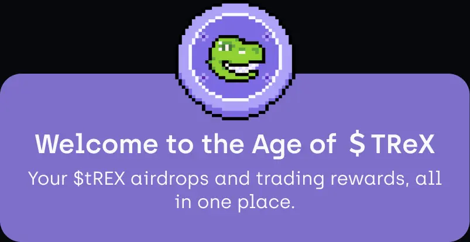
DESIGN SYSTEM
Tokens first. Components second.
Primitive tokens hold raw color. Semantic tokens hold intent. Components only use semantic tokens — so changing the brand color is one edit, not two hundred.
Primitive Scales Five hues · 50 → 950
Raw values. No component uses them directly.
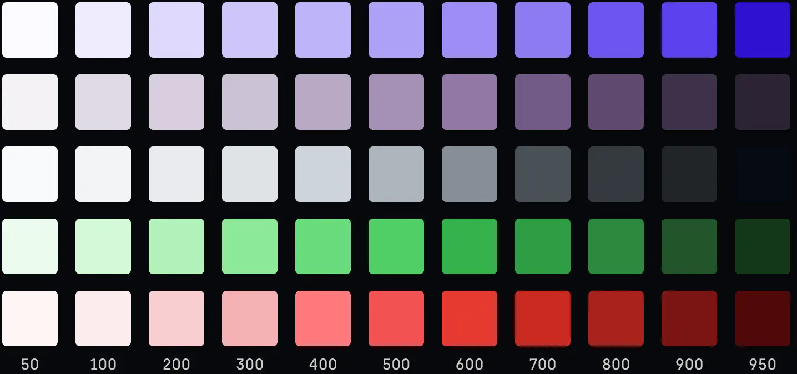
Semantic Tokens Surface · Border
Every raw value gets a job. surface/action says “action,” not “purple” — so the theme can change without touching a component.
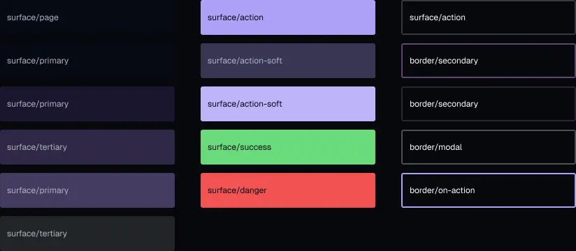
Component Library Buttons · Tags · every state
Default, hover, loading, disabled — drawn, not described. Six tag variants, one shell.
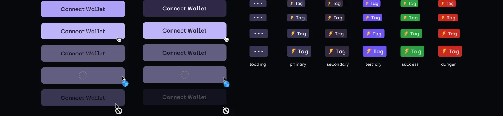
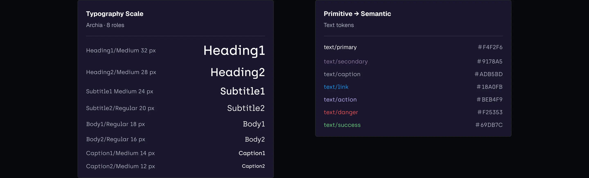
Rewards Desktop · Mobile
The system in use: a full page built from the tokens and components above.
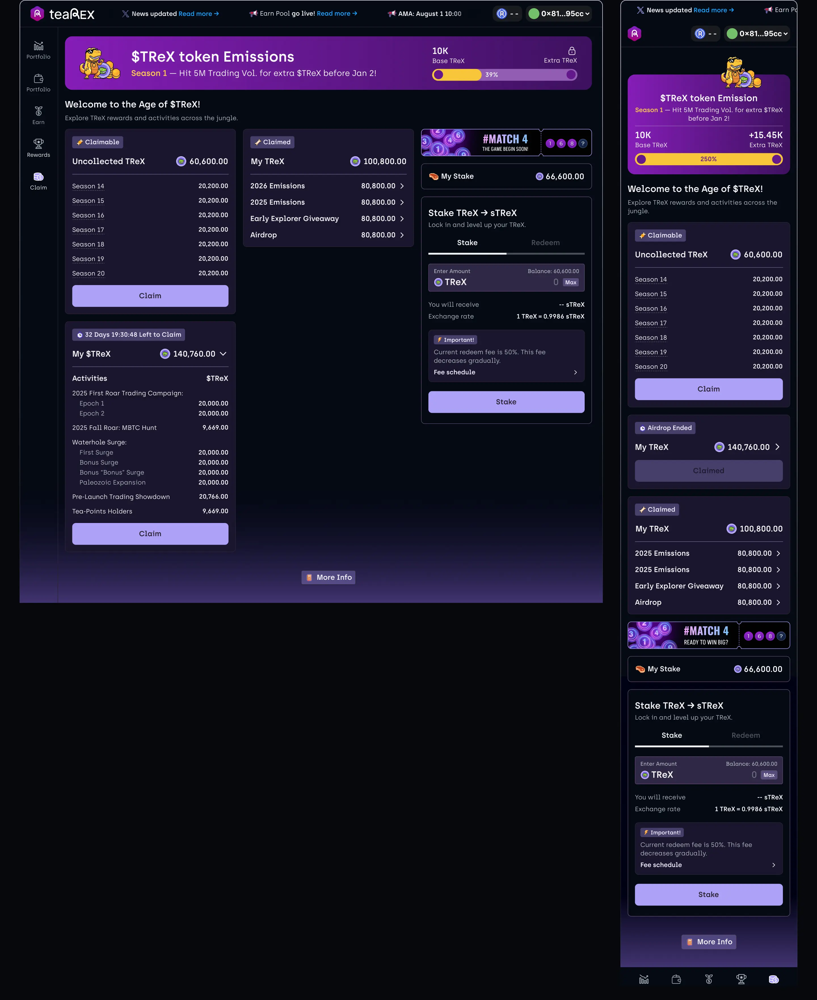
PRODUCT UX
Two features, two design problems.
Each feature brought its own challenge. Here are two — decisions about hierarchy, interaction and state, not just styling.
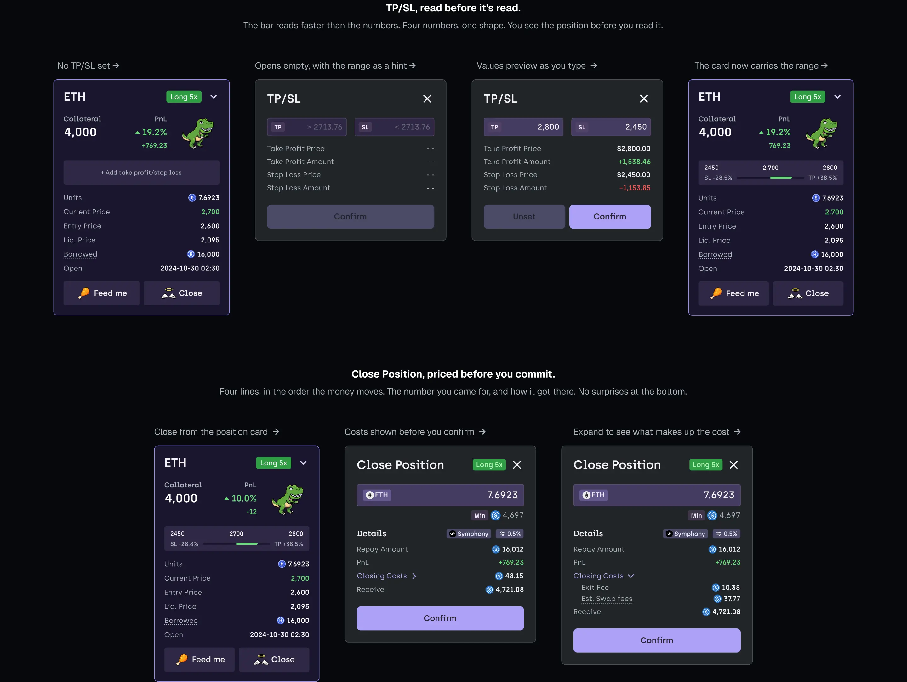
TP/SL, read at a glance.
Four numbers, one bar. You see where the position stands before you read a figure.
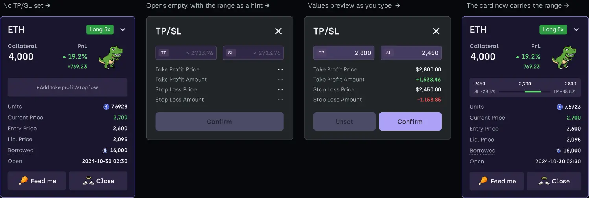
Close Position, priced before you commit.
Four lines, in the order the money moves: what you get, and how it got there. No surprises at the bottom.
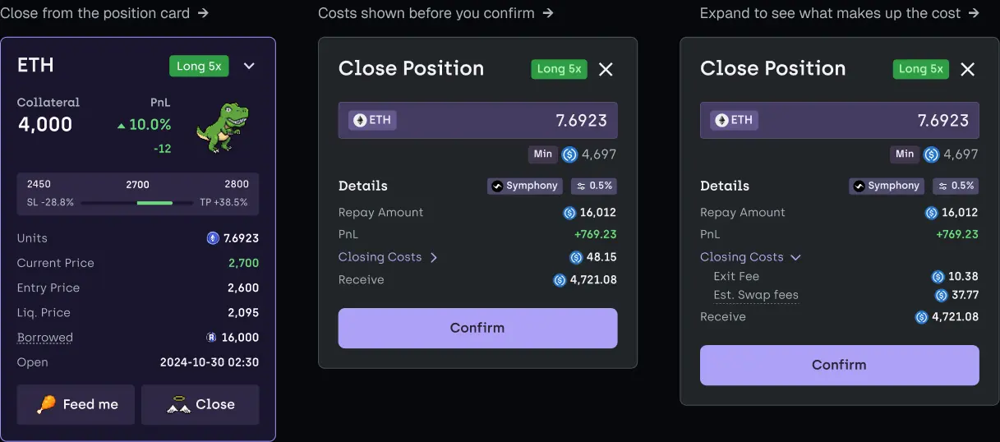
THE OUTCOME
It started with Rex.
A trading terminal doesn't need a mascot. It needs a reason to be remembered — and most terminals look the same.
So I built outward from the character. Mobile first, because that's where people check positions. Then tokens, components, a type scale, every state drawn. Five product areas shipped, all consistent. Rex lives in labels, empty states and rewards. He never touches a price or a liquidation warning.
That line is the system. Remove the dinosaur and the components still work. Keep him and you remember which app you're using.